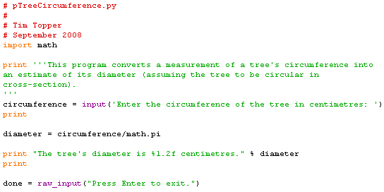

Scott used a tape measure to measure the circumferences of all the trees in a regeneration plot, but the database wants him to enter diameters instead of circumferences. Assuming the trees are roughly circular in cross-section we can calculate the diameter from the circumference, because the diameter is twice the radius and the radius is the circumference divided by 2π. Write a program that will let him enter the circumference and will print the corresponding diameter. A sample run might look like:
Enter the circumference of the tree in centimetres: 238
The tree's diameter is approximately: 75.757752911742188 centimetres.